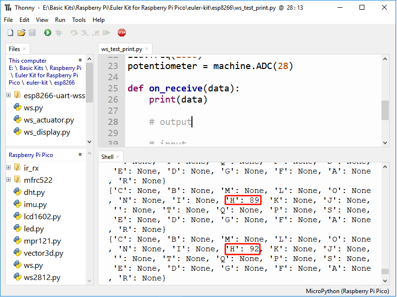

About SunFounder Controller¶
SunFounder Controller是SunFounder设计的遥控APP，
Install Sunfounder Controller
Search for Sunfounder Controller in APP Store (or Google Play) and download it.

首页介绍
Widget Lists
The control widgets are shown in the table:

The data widgets are shown in the table:
